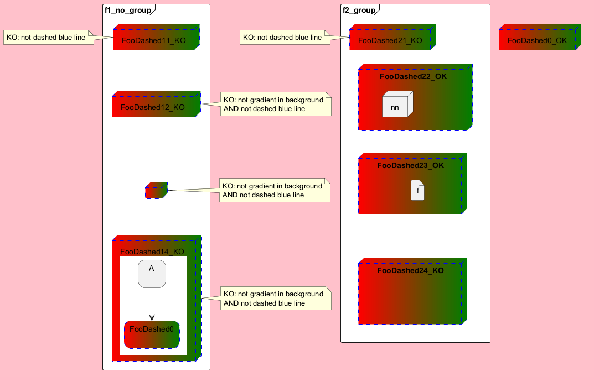

@startuml
'skinparam Backgroundcolor Lavender
'skinparam NoteBackgroundcolor crimson
<style>
document {
Backgroundcolor pink
}
</style>
node FooDashed0_OK #red|green;line.dashed;line:blue
frame "f1_no_group" #fff {
node FooDashed11_KO #red|green;line.dashed;line:blue
node FooDashed12_KO #red|green;line.dashed;line:blue [
FooDashed12_KO
]
node FooDashed13_KO #red|green;line.dashed;line:blue [
]
node FooDashed14_KO #red|green;line.dashed;line:blue [
FooDashed14_KO
{{
state A
state FooDashed0 #red|green ##[dashed]blue {
}
A-->FooDashed0
}}
]
}
FooDashed11_KO -[hidden]- FooDashed12_KO
FooDashed12_KO -[hidden]- FooDashed13_KO
FooDashed13_KO -[hidden]- FooDashed14_KO
note left of FooDashed11_KO
KO: not dashed blue line
end note
note left of FooDashed12_KO
KO: not gradient in background
AND not dashed blue line
end note
note left of FooDashed13_KO
KO: not gradient in background
AND not dashed blue line
end note
note left of FooDashed14_KO
KO: not gradient in background
AND not dashed blue line
end note
frame "f2_group" #fff {
node FooDashed21_KO #red|green;line.dashed;line:blue {
}
node FooDashed24_KO #red|green;line.dashed;line:blue {
node m
}
hide m
node FooDashed23_OK #red|green;line.dashed;line:blue {
file f
}
node FooDashed22_OK #red|green;line.dashed;line:blue {
node n
node nn
}
hide n
}
note left of FooDashed21_KO
KO: not dashed blue line
end note
FooDashed21_KO -[hidden]- FooDashed22_OK
FooDashed22_OK -[hidden]- FooDashed23_OK
FooDashed23_OK -[hidden]- FooDashed24_KO
@enduml